The Cartesian coordinate system gives us a way to identify exactly where a point is on a two-dimensional plane.
First, a special point called the origin is marked.
Then two axes are drawn. An axis is a straight line that extends forever. One axis is drawn horizontally through the origin, and is known as the horizontal axis, or as the \(x\)-axis. The other axis is drawn vertically through the origin, and is known as the vertical axis, or the \(y\)-axis.
Now the plane has been divided into four quadrants. The upper right quadrant is Quadrant I. Then moving counter-clockwise around the origin, the remaining quadrants are numbered II, III, and IV.
Each axis is given a scale. This means marking some numbers on each axis so we know distances. Numbers must be marked in a way such that a numerical distance of \(1\) (for example from “0” to “1”, or from “1” to “2”) always corresponds to the same physical distance on the plane. However, it is OK (and common) for the scale on the \(x\)-axis to be different from the scale on the \(y\)-axis.
Now each point on the plane can be identified with an ordered pair of numbers, \((x_0,y_0)\text{.}\) The number \(x_0\) tells you a place on the \(x\)-axis, and the number \(y_0\) tells you a place on the \(y\)-axis. If you move up/down from that place on the \(x\)-axis, while also moving right/left from that place on the \(y\)-axis, there is one point where the two paths cross. And this is the point labeled with \((x_0,y_0)\text{.}\) Here are some example points with their coordinates.
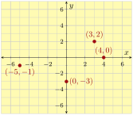
Checkpoint3.10.1.
Identify the coordinates of each point in the graph.
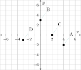
Explanation.
Point \(A\) is \(4\) to the right and \(2\) down from the origin, so its coordinates are \({\left(4,-2\right)}\text{.}\)
Point \(B\) is \(0\) to the right and \(3\) up from the origin, so its coordinates are \({\left(0,3\right)}\text{.}\)
Point \(C\) is \(2\) to the right and \(0\) up from the origin, so its coordinates are \({\left(2,0\right)}\text{.}\)
Point \(D\) is \(3\) to the left and \(1\) down from the origin, so its coordinates are \({\left(-3,-1\right)}\text{.}\)
Checkpoint3.10.2.
Make a Cartesian plot with the indicated points marked.
The first point is \({{\frac{17}{3}}}\) to the right and \(4\) down from the origin. The second point is \(2\) to the right and \({{\frac{10}{3}}}\) up from the origin.
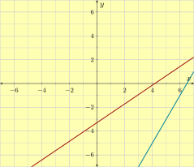
Checkpoint3.10.3.
Which quadrant is the point in?
\({\left(1,-5\right)}\)
\({\left(-1,-5\right)}\)
\({\left(1,5\right)}\)
\({\left(5,-1\right)}\)
Explanation.
The \(x\)-coordinate is positive and the \(y\)-coordinate is negative, so the point is in the lower right quadrant, which is Quadrant IV.
The \(x\)-coordinate is negative and the \(y\)-coordinate is negative, so the point is in the lower left quadrant, which is Quadrant III.
The \(x\)-coordinate is positive and the \(y\)-coordinate is positive, so the point is in the upper right quadrant, which is Quadrant I.
The \(x\)-coordinate is positive and the \(y\)-coordinate is negative, so the point is in the lower right quadrant, which is Quadrant IV.
Graphing Equations.
When an equation has the variables \(x\) and \(y\text{,}\) for example \(y=2x+1\) or \(x^2 + y^2 = 4\text{,}\) the graph of that equation is the collection of all the points \((x,y)\) that make the equation true. Typically when you plot all these points on the Cartesian plane, you end up with a line or curve.
Given an equation in \(x\) and \(y\text{,}\) and a point \((x_0,y_0)\text{,}\) you might want to know if that point is on the graph of that equation. To determine this, you can substitute the \(x\)- and \(y\)-values from the point into the equation and see if it boils down to a true or false equation.
How do you draw a graph, given an equation with \(x\) and \(y\text{?}\) There are many valid methods depending on the equation, but the most fundamental tool you can use is to just make up some \(x\)-values and then use the equation to solve for the corresponding \(y\)-values. Then you have so many points you can plot as dots. With enough of these, you hopefully see a pattern and can connect the dots in a smooth way. Example 3.2.6 demonstrates this process.
Checkpoint3.10.4.
Which of the ordered pairs are solutions to the given equation? There may be more than one correct answer.
\(y={3x+7}\)
\(\displaystyle \left(-4,-5\right)\)
\(\displaystyle \left(-3,-2\right)\)
\(\displaystyle \left(-1,2\right)\)
\(\displaystyle \left(1,-2\right)\)
Explanation.
Only the points \((-4,-5), (-3,-2)\) are solutions. The other points cause the equation to be false when \(x\) and \(y\) are substituted.
Checkpoint3.10.5.
Make a table and then plot the equation.
\(y={-x^{2}+2x+3}\)
\(x\)
\(y\)
Point
\(-2\)
\(-1\)
\(0\)
\(1\)
\(2\)
Explanation.
\(x\)
\(y\)
Point
\(-2\)
\({-5}\)
\({\left(-2,-5\right)}\)
\(-1\)
\({0}\)
\({\left(-1,0\right)}\)
\(0\)
\({3}\)
\({\left(0,3\right)}\)
\(1\)
\({4}\)
\({\left(1,4\right)}\)
\(2\)
\({3}\)
\({\left(2,3\right)}\)
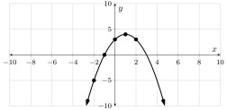
Checkpoint3.10.6.
You bought a new car for \({\$48{,}000}\) with a zero interest loan over a five-year period. That means you’ll have to pay \({\$800}\) each month for the next five years (\(60\) months) to pay it off. According to this information, the equation \(y={48000-800x}\) models the loan balance after \(x\) months, where \(y\) is in dollars. Make a graph of this equation.
Explanation.
Time \(x\) is measured in months, and this loan will take \(60\) months to pay off. So we will make a table where the \(x\)-values run from \(0\) to \(60\text{.}\)
\(x\)
\(y={48000-800x}\)
\(0\)
\({48000}\)
\(15\)
\({36000}\)
\(30\)
\({24000}\)
\(45\)
\({12000}\)
\(60\)
\({0}\)
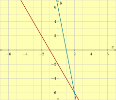
Exploring Two-Variable Data and Rate of Change.
With a table of \(x\)- and \(y\)-values, the rate of change from one row to the next is defined to be
\begin{equation*}
\frac{\text{change in $y$}}{\text{change in $x$}}=\frac{\Delta y}{\Delta x}=\frac{y_2-y_1}{x_2-x_1}
\end{equation*}
Sometimes the numerator \(y_2-y_1\) is naturally negative, and sometimes the denominator \(x_2-x_1\) is naturally negative, and we need to be careful with signs.
When given a table of \(x\)- and \(y\)-values, it is helpful to look for patterns. Some patterns we look for include:
Is the \(y\)-value always a certain multiple of the \(x\)-value?
Is the \(y\)-value always a certain number added to the \(x\)-value?
Is the \(y\)-value always the \(x\)-value raised to a certain power?
When you move from one row to the next, is the rate of change always the same?
When you move from one row to the next, does the \(x\)-value always get a certain number added to it, and the \(y\)-value always gets multiplied by a certain (possibly different) number?
If you see one of these patterns, you can write an equation with \(x\) and \(y\) that captures the pattern you found.
Checkpoint3.10.7.
Write an equation in the form \(y=\ldots\) suggested by the pattern in the table.
\(x\)
\(y\)
\(5\)
\({9}\)
\(6\)
\({10}\)
\(7\)
\({11}\)
\(8\)
\({12}\)
\(9\)
\({13}\)
Explanation.
Each \(y\)-value is \(4\) more than the corresponding \(x\)-value. So the equation is \({y = x+4}\text{.}\)
Checkpoint3.10.8.
Find the rate of change between the two given points.
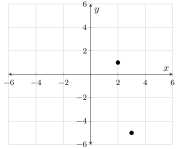
Explanation.
The coordinates of the points are \({\left(2,1\right)}\) and \({\left(3,-5\right)}\text{.}\) We apply the rate of change formula:
Does the table show that \(x\) and \(y\) have a linear relationship?
\(x\)
\(y\)
\(0\)
\({7}\)
\(1\)
\({8}\)
\(2\)
\({39}\)
\(3\)
\({250}\)
\(4\)
\({1031}\)
\(5\)
\({3132}\)
Explanation.
As each \(x\)-value increases by \(1\text{,}\) the \(y\)-values increases by \({1}\text{,}\) then \({31}\text{,}\) then \({211}\text{,}\) then \({781}\text{,}\) then \({2101}\text{.}\) So this table shows that \(x\) and \(y\) do not have a linear relationship.
Slope.
When you take any two points on a straight (non-vertical) line, the rate of change is always the same no matter which two points you choose. We call this common rate of change the slope of the line. It is usually represented by the symbol \(m\text{.}\)
Slope can be calculated using the same formula as for rate of change in general:
\begin{equation*}
m=\frac{\text{change in $y$}}{\text{change in $x$}}=\frac{\Delta y}{\Delta x}=\frac{y_2-y_1}{x_2-x_1}
\end{equation*}
where \((x_1,y_1)\) and \((x_2,y_2)\) can be any two points on the line.
A useful mantra for slope is “rise over run”, because graphically as you move from \((x_1,y_1)\) and \((x_2,y_2)\text{,}\) the amount you “rise” by is \(y_2-y_1\text{,}\) and the amount you “run” by is \(x_2-x_1\text{.}\) However, it is recommended that you get in the habit of thinking about the “run” as coming logically first, and the “rise” being a consequence of the run.
Slope triangles can be drawn onto the graph of a line to illustrate a “run” and its corresponding “rise”.
The sign of a slope has meaning:
A positive slope means the line tends upward as you follow it from left to right.
A negative slope means the line tends downward as you follow it from left to right.
A slope of \(0\) means the line is horizontal.
Also the larger a slope is, the more steep the line.
In an application setting, if some quantity is growing at a constant rate over time, that rate that it is growing is the slope of a line that you would have if you were to draw a graph where time is the horizontal axis, and that quantity is the vertical axis.
Checkpoint3.10.10.
Find the slope of the line passing through the two given points.
\({\left(5,49\right)}\) and \({\left(6,57\right)}\)
First we use the graph to identify two points. We find \((9, 9)\) and \((5, 3)\text{,}\) but you might find another pair of points and the slope will work out to be the same. Using the slope formula:
Ashanti is learning to ski on the slopes of Mt. Hood. The graph below models her elevation from the ski park’s base as time passes during one ski run on a small hill. Find the slopes of the four line segments, and interpret their meanings in this context.
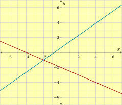
Explanation.
The first and third segments clearly have slope \(0\text{.}\) For the others, we need to indentify the coordinates of the points that begin and end each line segment: \((0,200)\text{,}\)\((30,200)\text{,}\)\((60,0)\text{,}\)\((100,0)\text{,}\) and \((300,200)\text{.}\) For the second and fourth slopes:
If a line equation is written in the form \(y=mx+b\) (where \(m\) and \(b\) are numbers, \(x\) and \(y\) are variables) then it is said to be in slope-intercept form. The number \(m\) is the slope of the line, and the point \((0,b)\) is the \(y\)-intercept of the line. Slope-intercept form is useful because you can immediately see the slope and the \(y\)-intercept.
Graphing a line equation that is in slope-intercept form can be done by first marking the \(y\)-intercept at \((0,b)\) on the \(y\)-axis, and then using slope triangles based on the slope \(m\text{.}\)
Conversely, you might need to write down a line’s equation in slope-intercept form. If you have a way to determine the slope and the \(y\)-intercept, then all you need to do is write down \(y=mx+b\) with the appropriate values for \(m\) and \(b\text{.}\) For example if you have a graph of a line, you can see the value of \(b\) where the line crosses the \(y\)-axis. And you can use a slope triangle to determine the slope \(m\text{.}\) Then writing \(y=mx+b\) gives you an equation for the line.
If \(m=1\text{,}\)\(m=-1\text{,}\) or \(m=0\text{,}\) you don’t need to write \(m\text{;}\) you can just write \(y=x+b\text{,}\)\(y=-x+b\text{,}\) or \(y=b\text{.}\) And if \(b=0\text{,}\) you don’t need to write \(b\text{;}\) you can just write \(y=mx\text{.}\)
In an application setting, if you know the constant rate at which something is growing over time, that is the slope \(m\text{.}\) And if you know the initial value that the quantity had when the time \(t\) was \(0\text{,}\) that is the value for \(b\text{.}\) And so \(y=mt+b\) models that quantity growing over time.
Checkpoint3.10.13.
In the given graph, what is the line’s slope-intercept equation?
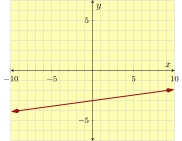
Explanation.
We can see the \(y\)-intercept is at \((0,-3)\text{.}\) Using “rise over run”, we also see that the slope is \({{\frac{1}{9}}}\text{.}\) So the line’s slope-intercept equation is \({y = {\frac{1}{9}}x-3}\text{.}\)
Checkpoint3.10.14.
Graph the equation.
\({y = -3x+4}\)
Explanation.
Start the plot at the \(y\)-intercept \((0,4)\text{.}\) Then use slope triangles with slope \(-3\) to extend a line in two directions.
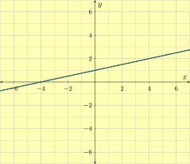
Checkpoint3.10.15.
A company set aside a certain amount of money in the year 2000. The company spent exactly \({\$33{,}000}\) from that fund each year on perks for its employees. In \(2003\text{,}\) there was still \({\$589{,}000}\) left in the fund.
Let \(x\) be the number of years since 2000, and let \(y\) be the amount of money, in dollars, left in the fund that year. Use a linear equation to model the amount of money left in the fund after so many years.
The linear model’s slope-intercept equation is .
In the year \(2011\text{,}\) there was left in the fund.
In the year , the fund will be empty.
Explanation.
A line’s equation in slope-intercept form looks like \(y=mx+b\text{,}\) where \(m\) is the slope, and \(y\) is the \(y\)-coordinate of the \(y\)-intercept. We have been told that the account decreases by \({\$33{,}000}\) each year, so the slope of the linear model is \(-33000\) (dollars per year).
So now we have that \(y=-33000x+b\text{.}\) The next step is to find the value of \(b\text{.}\) One way is to substitute a point into \(y={-33000x}+b\text{.}\) We use the point \((3,589000)\text{.}\)
\(\begin{aligned}
589000 \amp = -33000(3) + b \\
589000 \amp = -99000 + b \\
589000\addright{99000} \amp = -99000 + b\addright{99000} \\
688000 \amp = b
\end{aligned}\)
So this line’s slope-intercept equation is \(y={-33000x}+688000\text{.}\)
In the year \(2011\text{,}\)\(x\) was \(11\text{.}\) To find the amount remaining in the fund at that time, we substitute \(11\) in for \(x\) in the slope-intercept equation from part (a), and we have:
So in the year \(2011\text{,}\) the fund had \({\$325{,}000}\) remaining in it.
The fund will be empty when it has \({\$0}\) left in it. That is, \(y\) will equal \(0\text{.}\) To find how many years until this happens, we substitute \(0\) in for \(y\) in the equation \(y=-33000x+688000\text{,}\) and we have:
Approximately \(20.85\) years after 2000, during the year 2020, the fund will be depleted.
Point-Slope Form.
If you know the slope of a line is \(m\text{,}\) and you know one point that the line passes through is \((x_0,y_0)\text{,}\) then one equation for that line is \(y=m(x-x_0)+y_0\text{,}\) and that is said to be in point-slope form.
Point-slope form is valuable because it allows you to work with an equation for a line and not directly care where the \(y\)-intercept is. Instead, you can work with any other point on the line, \((x_0,y_0)\text{.}\) The \(y\)-intercept happens where \(x\) is \(0\text{,}\) and in context, that might be meaningless.
Students need to become used to the subtraction sign in front of \(x_0\) and the addition sign in front of \(y_0\text{.}\) The different signs can cause confusion. But note that if you substitute \(x_0\) in for \(x\text{,}\) then the entire block \(m(x-x_0)\) is zeroed out and you are left with only \(y_0\text{.}\) This might help you remember those signs.
Usually you should resist the temptation to convert a point-slope form line equation into slope-intercept form. One exception is when you want to find the line’s \(y\)-intercept quickly.
Graphing a line equation that is in point slope form is straightforward. First, identify the special point that is being used, \((x_0,y_0)\text{,}\) and mark that point. Then use slope triangles based on the slope \(m\) to extend the line.
In an application setting, if you know the constant rate at which something is growing over time, that is the slope \(m\text{.}\) And if you know some piece of data about one point in time, that tells you a special point \((t_0,y_0)\text{.}\) And so \(y=m(t-t_0)+y_0\) models that quantity growing over time.
Checkpoint3.10.16.
A line’s equation is given in point-slope form. Identify the slope and the point on the line that is being singled out.
\(y={6\mathopen{}\left(x-9\right)+2}\)
Explanation.
This line is in point-slope form, so we can just recognize that the slope is \(6\) and the line passes through the point \({\left(9,2\right)}\text{.}\)
Checkpoint3.10.17.
A line passes through two given points. Find an equation for the line in point-slope form using one of the given points.
\({\left(3,-1\right)}\) and \({\left(11,-15\right)}\)
Explanation.
First we must find this line’s slope using the slope formula:
So the slope is \({-{\frac{7}{4}}}\text{.}\) Using the point \({\left(3,-1\right)}\) and point-slope form, an equation for the line is \(y={-{\frac{7}{4}}\mathopen{}\left(x-3\right)-1}\text{.}\)
Checkpoint3.10.18.
A biologist has been observing a tree’s height. This type of tree typically grows by \(0.26\) feet each month. Fifteen months into the observation, the tree was \(16.3\) feet tall.
Let \(x\) be the number of months passed since the observations started, and let \(y\) be the tree’s height at that time, in feet. Use a linear equation to model the tree’s height as the number of months pass.
A point-slope equation to model this is .
\(30\) months after the observations started, the tree would be feet in height.
months after the observation started, the tree would be \(25.92\) feet tall.
Explanation.
Point-slope form is \(y=m(x-x_0)+y_0\text{,}\) where \(m\) is the slope, and \((x_0,y_0)\) is some point we know to be on the line. We first need to find the line’s slope. Since the tree grows at a rate of \(0.26\) feet per month, \(0.26\) is the slope of the linear model.
So now we have that \(y=0.26(x-x_0)+y_0\text{.}\) We can use \((x_0,y_0)=(15,16.3)\) to get \({y = 0.26\mathopen{}\left(x-15\right)+16.3}\text{.}\)
After \(30\) months, we can find the height of the tree if we substitute \(30\) in for \(x\) in the equation \(y=0.26(x-15)+16.3\text{,}\) and we have:
\(\displaystyle{\begin{aligned}
y \amp = 0.26(30-15) +16.3 \\
y \amp = 20.2
\end{aligned}
}\)
So after \(30\) months, the tree is \(20.2\) feet tall.
To find when the tree was \(25.92\) feet tall, we substitute \(25.92\) in for \(y\) in the equation \(y=0.26(x-15)+16.3\text{,}\) and we have:
So the tree was \(25.92\) feet tall after \(52\) months.
Standard Form.
A line can be presented with an equation in the form \(Ax+By=C\text{,}\) and this is called standard form. In standard form, the \(y\) is not isolated. And \(x\) and \(y\) have symmetric roles on the left side of the equation.
Standard form can be useful in an application context where neither the \(x\) quantity nor the \(y\) quantity come logically first.
Unlike slope-intercept and point-slope forms, there is no direct meaning to the numbers in a standard form equation. The \(A\text{,}\)\(B\text{,}\) and \(C\) don’t directly tell you anything about the line’s graph. However:
The line’s slope is \(-\frac{A}{B}\text{.}\)
The line’s \(x\)-intercept is \(\frac{C}{A}\text{.}\)
The line’s \(y\)-intercept is \(\frac{C}{B}\text{.}\)
With a line equation in standard form, it is easy to find the \(x\)- and \(y\)-intercepts, even if you don’t memorize the facts listed above. You can just substitute \(y=0\) when looking for the \(x\)-intercept, and substitute \(x=0\) when looking for the \(y\)-intercept.
For this reason, when trying to plot a line from an equation in standard form, it might be easiest to locate the intercepts and plot them. Then connect those points and extend to make a straight line.
Checkpoint3.10.19.
Find both intercepts and the slope of the line.
\({7x-9y}={63}\)
Explanation.
Find the \(x\)-intercept by setting \(y=0\text{.}\) That makes \(7x=63\text{,}\) so \(x=9\text{.}\) And the \(x\)-intercept is at \({\left(9,0\right)}\text{.}\)
Find the \(y\)-intercept by setting \(x=0\text{.}\) That makes \(-9y=63\text{,}\) so \(y=-7\text{.}\) And the \(y\)-intercept is at \({\left(0,-7\right)}\text{.}\)
Find the slope by isolating \(y\text{:}\)
\begin{equation*}
\begin{aligned}
{7x-9y} \amp= {63}\\
-9 y \amp= {63-7x}\\
y \amp= \frac{{63-7x}}{-9}\\
y \amp= {{\frac{9}{7}}x+\frac{63}{-9}}
\end{aligned}
\end{equation*}
So the slope is \({{\frac{9}{7}}}\text{.}\)
Checkpoint3.10.20.
Write the linear equation in standard form.
\({y}={9x+4}\)
Explanation.
Standard form is \(Ax+By=C\text{.}\) We need to move \(x\)- and \(y\)-terms to the same side of the equal sign.
Note that \({-9x+y}=4\) is already in standard form, but it’s preferable to make the leading coefficient positive.
Checkpoint3.10.21.
Plot the given standard form linear equation.
\({3x-2y}={6}\)
Explanation.
We can plot this by finding the \(x\)-intercept, which is at \({\left(2,0\right)}\text{,}\) and the \(y\)-intercept, which is at \({\left(0,-3\right)}\text{.}\) After plotting these, we can just connect the dots and extend the line past them. It is highly recommended to do some quality control by checking that a few more points on the line you’ve drawn actually satisfy the equation.
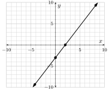
Geometry of Lines.
Horizontal lines have equations of the form \(y=k\) for some fixed number \(k\text{.}\) The slope of a horizontal line is \(0\text{.}\)
Vertical lines have equations of the form \(x=h\) for some fixed number \(h\text{.}\) Vertical lines do not have slope at all (not to be confused with having slope \(0\)).
Two vertical lines are parallel. If neither line is vertical, the two lines are parallel if and only if they have the same slope. If you have two lines and need to determine whether or not they are parallel, find each line’s slope. Only when they have the exact same slope will the two lines be parallel.
Two lines are perpendicular when one is horizontal and the other is vertical. But if neither line is vertical, then they are perpendicular if and only if when you multiply their slopes together, the result is \(-1\text{.}\) In other words, the two slopes are negative reciprocals of each other.
Checkpoint3.10.22.
Write an equation for the given line.
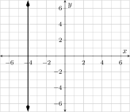
Explanation.
This is a vertical line, so it has an equation in the form \(x=\text{number}\text{.}\) The graph shows us which number. The equation is \({x = -4}\text{.}\)
Checkpoint3.10.23.
Determine if the two lines are the same line, distinct parallel lines, perpendicular lines, or none of the above.
Line \(\ell_1\) contains the points \({\left(-3,8\right)}\) and \({\left(-1,9\right)}\text{.}\) Line \(\ell_2\) contains the points \({\left(6,5\right)}\) and \({\left(10,7\right)}\text{.}\)
Explanation.
The first line’s slope is \({{\frac{1}{2}}}\) and the second line’s slope is also \({{\frac{1}{2}}}\text{.}\) So either the two lines are the same line, or they are parallel.
In point-slope form, the first line has an equation \(y={{\frac{1}{2}}}(x + 3)+8\text{,}\) and the second line has an equation \(y={{\frac{1}{2}}}(x-6)+5\text{.}\) In slope-intercept form, these are \(y={{\frac{1}{2}}x+{\frac{19}{2}}}\) and \(y={{\frac{1}{2}}x+2}\text{.}\) So the two lines have different \(y\)-intercepts and must be distinct lines.
Checkpoint3.10.24.
Write an equation for the line that is described. Then plot that line.
A line is parallel to the line passing through \({\left(-1,-2\right)}\) and \({\left(-5,2\right)}\text{,}\) and passes through \({\left(5,-5\right)}\text{.}\)
Explanation.
Based on the points \({\left(-1,-2\right)}\) and \({\left(-5,2\right)}\text{,}\) the first line has slope \({-1}\text{.}\) But the lines are parallel, so the second line also has slope \({-1}\text{.}\) The second line passes through \({\left(5,-5\right)}\text{,}\) so we can use point-slope form to write an equation for it: \(y={-\left(x-5+5\right)}\text{.}\) To plot this, we can start at \({\left(5,-5\right)}\) and use slope triangles.
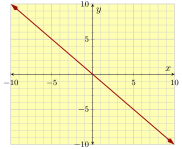
ExercisesReview Exercises for Chapter 3
Section 1: Cartesian Coordinates
Exercise Group.
Identify the coordinates of each point in the graph.
1.
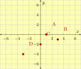
2.
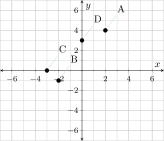
Exercise Group.
Make a Cartesian plot with the indicated points marked.
Sketch a Cartesian coordinate plane and then shade the quadrants where the first coordinate is negative.
6.
Here is a graph of the number of SARS-CoV-2 (COVID) cases confirmed by the CDC within the United States during the month of January, 2020.
What are the coordinates for the data point corresponding to January 20th?
How many additional new cases were there between January 2th and January th?
7.
Which quadrant is the point in?
\({\left(-2,-7\right)}\)
\({\left(7,-2\right)}\)
\({\left(2,-7\right)}\)
\({\left(2,7\right)}\)
Section 2: Graphing Equations
Exercise Group.
Which of the ordered pairs are solutions to the given equation? There may be more than one correct answer.
8.
\(y={4x+5}\)
\(\displaystyle \left(0,2\right)\)
\(\displaystyle \left(17,3\right)\)
\(\displaystyle \left(2,13\right)\)
\(\displaystyle \left(-2,-3\right)\)
9.
\(y={5x-1}\)
\(\displaystyle \left(4.7,22.5\right)\)
\(\displaystyle \left(-3.4,-18\right)\)
\(\displaystyle \left(-1.9,-6.5\right)\)
\(\displaystyle \left(8.5,1.9\right)\)
Exercise Group.
Make a table and then plot the equation.
10.
\(y={x+2}\)
\(x\)
\(y\)
Point
\(-2\)
\(-1\)
\(0\)
\(1\)
\(2\)
11.
\(y={x^{3}-x^{2}+x+1}\)
\(x\)
\(y\)
Point
\(-2\)
\(-1\)
\(0\)
\(1\)
\(2\)
12.
The pressure in a full propane tank will rise and fall if the ambient temperature rises and falls. The equation \(P={0.2\mathopen{}\left(T+460\right)}\) models this relationship, where the temperature \(T\) is measured in °F and the pressure and the pressure \(P\) is measured in lb/in^2. Plot a graph of this equation. Make sure to use \(T\)-values that make sense in context.
Section 3: Exploring Two-Variable Data and Rate of Change
Exercise Group.
Write an equation in the form \(y=\ldots\) suggested by the pattern in the table.
13.
\(x\)
\(y\)
\(3\)
\({18}\)
\(4\)
\({24}\)
\(5\)
\({30}\)
\(6\)
\({36}\)
\(7\)
\({42}\)
14.
\(x\)
\(y\)
\(25\)
\({5}\)
\(1\)
\({1}\)
\(4\)
\({2}\)
\(16\)
\({4}\)
\(9\)
\({3}\)
15.
\(x\)
\(y\)
\(0.1\)
\({0.01}\)
\(0.4\)
\({0.16}\)
\(0.5\)
\({0.25}\)
\(0.6\)
\({0.36}\)
\(0.9\)
\({0.81}\)
Exercise Group.
Find the rate of change between the two given points.
16.
\({\left(-6,1\right)}\) and \({\left(-9,-4\right)}\)
17.
\({\left({\frac{2}{3}},{\frac{1}{2}}\right)}\) and \({\left({\frac{1}{9}},{\frac{3}{5}}\right)}\)
18.
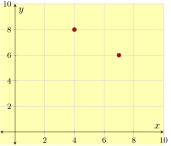
19.
\(x\)
\(y\)
\(2\)
\(1\)
\(4\)
\(2\)
\(5\)
\(4\)
\(6\)
\(5\)
\(7\)
\(7\)
From \(x=5\) to \(x=7\text{.}\)
Exercise Group.
Does the table show that \(x\) and \(y\) have a linear relationship?
20.
\(x\)
\(y\)
\(7\)
\({29}\)
\(8\)
\({25}\)
\(9\)
\({21}\)
\(10\)
\({17}\)
\(11\)
\({13}\)
\(12\)
\({9}\)
21.
\(x\)
\(y\)
\(-8\)
\({64.69}\)
\(-7\)
\({67.28}\)
\(-6\)
\({69.87}\)
\(-5\)
\({72.46}\)
\(-4\)
\({75.05}\)
\(-3\)
\({77.64}\)
22.
This table gives the tide level in Lincoln City, Oregon, over one particular 24-hour period, measured in meters above average sea level.
Hour
Tide Level
Hour
Tide Level
Hour
Tide Level
\(0\)
\(5.87\)
\(8\)
\(2.33\)
\(16\)
\(1.37\)
\(1\)
\(5.54\)
\(9\)
\(3.65\)
\(17\)
\(0.18\)
\(2\)
\(4.66\)
\(10\)
\(4.96\)
\(18\)
\(-0.26\)
\(3\)
\(3.45\)
\(11\)
\(5.92\)
\(19\)
\(0.19\)
\(4\)
\(2.23\)
\(12\)
\(6.27\)
\(20\)
\(1.41\)
\(5\)
\(1.34\)
\(13\)
\(5.83\)
\(21\)
\(3.07\)
\(6\)
\(1.02\)
\(14\)
\(4.64\)
\(22\)
\(4.74\)
\(7\)
\(1.37\)
\(15\)
\(3.00\)
\(23\)
\(5.95\)
(a)
Find the rate of change in the tide level between hours 10 and 12.
(b)
And what was the rate of change between hours 14 and 20?
(c)
List the longest intervals where there is a negative rate of change without any times in between that have positive rates of change.
(d)
Over which hour-long interval was the rate of change highest?
(e)
What was that rate of change?
Section 4: Slope
Exercise Group.
Find the slope of the line passing through the two given points.
23.
\({\left(-8,8\right)}\) and \({\left(1,16\right)}\)
24.
\({\left(-7.3,-0.8\right)}\) and \({\left(-2.9,9.2\right)}\)
25.
\({\left(-{\frac{9}{5}},{\frac{5}{7}}\right)}\) and \({\left(-{\frac{5}{4}},{\frac{5}{3}}\right)}\)
Exercise Group.
Find the slope of the line given its graph.
26.
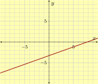
27.
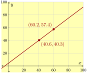
28.
Determine the steepest slope for a line connecting two points from the list.
Plot at least three lines that each have slope the given slope.
29.
\({{\frac{4}{3}}}\text{.}\)
30.
\({-{\frac{3}{4}}}\text{.}\)
31.
A liquid solution is slowly leaking from a container. This graph shows how many milliliters \(y\) of solution remains in the container after \(x\) minutes.
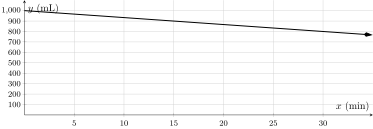
What is the slope of this line, including units?
Section 5: Slope-Intercept Form
Exercise Group.
Find the line’s slope and \(y\)-intercept.
32.
\(y={-2x-3}\)
33.
\(y={{\frac{6}{5}}x-8}\)
34.
\(y={4-3x}\)
Exercise Group.
In the given graph, what is the line’s slope-intercept equation?
35.
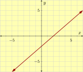
36.
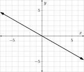
Exercise Group.
Graph the equation.
37.
\({y = -{\frac{1}{4}}x-2}\)
38.
\({y = {\frac{7}{4}}x+4}\)
39.
\({y = -{\frac{7}{9}}x+1}\)
Exercise Group.
A line passes through the two given points. Find the line’s equation in slope-intercept form.
40.
\({\left(1,4\right)}\) and \({\left(6,-11\right)}\)
41.
\({\left(-49,65\right)}\) and \({\left(-35,49\right)}\)
42.
A gym charges members \({\$20}\) for a registration fee, and then \({\$30}\) per month. You became a member some time ago, and now you have paid a total of \({\$590}\) to the gym. How many months have passed since you joined the gym?
months have passed since you joined the gym.
43.
Dawn hired a face-painter for a birthday party. The painter charged a flat fee of \({\$60}\text{,}\) and then charged \({\$2.50}\) per person. In the end, Dawn paid a total of \({\$97.50}\text{.}\) How many people used the face-painter’s service?
people used the face-painter’s service.
44.
By your cell phone contract, you pay a monthly fee plus \({\$0.04}\) for each minute you spend on the phone. In one month, you spent \(270\) minutes over the phone, and had a bill totaling \({\$28.80}\text{.}\)
Let \(x\) be the number of minutes you spend on the phone in a month, and let \(y\) be your total cell phone bill for that month, in dollars. Use a linear equation to model your monthly bill based on the number of minutes you spend on the phone.
This line’s slope-intercept equation is .
If you spend \(130\) minutes on the phone in a month, you would be billed .
If your bill was \({\$34.80}\) one month, you must have spent minutes on the phone in that month.
45.
Scientists are conducting an experiment with a gas in a sealed container. The mass of the gas is measured, and the scientists realize that the gas is leaking over time in a linear way. Each minute, they lose \(5\) grams. Five minutes since the experiment started, the remaining gas had a mass of \(195\) grams.
Let \(x\) be the number of minutes that have passed since the experiment started, and let \(y\) be the mass of the gas in grams at that moment. Use a linear equation to model the weight of the gas over time.
This line’s slope-intercept equation is .
\(32\) minutes after the experiment started, there would be grams of gas left.
If a linear model continues to be accurate, minutes since the experiment started, all gas in the container will be gone.
46.
Scientists are conducting an experiment with a gas in a sealed container. The mass of the gas is measured, and the scientists realize that the gas is leaking over time in a linear way.
Eight minutes since the experiment started, the gas had a mass of \(70.3\) grams.
Nineteen minutes since the experiment started, the gas had a mass of \(49.4\) grams.
Let \(x\) be the number of minutes that have passed since the experiment started, and let \(y\) be the mass of the gas in grams at that moment. Use a linear equation to model the weight of the gas over time.
This line’s slope-intercept equation is .
\(31\) minutes after the experiment started, there would be grams of gas left.
If a linear model continues to be accurate, minutes since the experiment started, all gas in the container will be gone.
Section 6: Point-Slope Form
Exercise Group.
A line’s equation is given in point-slope form. Identify the slope and the point on the line that is being singled out.
47.
\(y={7\mathopen{}\left(x-8\right)+9}\)
48.
\(y={7\mathopen{}\left(x-4\right)-5}\)
Exercise Group.
A line passes through the given points with the given slope. Find an equation for the line in point-slope form using the given point.
49.
through \({\left(2,7\right)}\) with slope \(8\)
50.
through \({\left(3,-8\right)}\) with slope \(9.7\)
Exercise Group.
A line passes through two given points. Find an equation for the line in point-slope form using one of the given points.
51.
\({\left(5,7\right)}\) and \({\left(6,9\right)}\)
52.
\({\left(-6,-9\right)}\) and \({\left(-18,-13\right)}\)
Exercise Group.
Change the given point-slope equation to slope-intercept form.
A company set aside a certain amount of money in the year 2000. The company spent exactly \({\$49{,}000}\) from that fund each year on perks for its employees. In \(2004\text{,}\) there was still \({\$636{,}000}\) left in the fund.
Let \(x\) be the number of years since 2000, and let \(y\) be the amount of money, in dollars, left in the fund that year. Use a linear equation to model the amount of money left in the fund after so many years.
A point-slope equation to model this is .
In the year \(2009\text{,}\) there was left in the fund.
In the year , the fund will be empty.
60.
A company set aside a certain amount of money in the year 2000. The company spent exactly the same amount from that fund each year on perks for its employees. In \(2003\text{,}\) there was still \({\$627{,}000}\) left in the fund. In \(2005\text{,}\) there was \({\$583{,}000}\) left.
Let \(x\) be the number of years since 2000, and let \(y\) be the amount of money, in dollars, left in the fund that year. Use a linear equation to model the amount of money left in the fund after so many years.
A point-slope equation to model this is .
In the year \(2011\text{,}\) there was left in the fund.
In the year , the fund will be empty.
61.
A biologist has been observing a tree’s height. \(14\) months into the observation, the tree was \(19.92\) feet tall. \(19\) months into the observation, the tree was \(20.57\) feet tall.
Let \(x\) be the number of months passed since the observations started, and let \(y\) be the tree’s height at that time, in feet. Use a linear equation to model the tree’s height as the number of months pass.
A point-slope equation to model this is .
\(30\) months after the observations started, the tree would be feet in height.
months after the observation started, the tree would be \(25.38\) feet tall.
Section 7: Standard Form
Exercise Group.
Find both intercepts and the slope of the line (whose equation is written in standard form).
62.
\({4x+9y}={5}\)
63.
\({4.2x-6.2y}={9.6}\)
Exercise Group.
Write the linear equation in standard form.
64.
\({y}={6x+6}\)
65.
\(y=-\frac{7}{5}x - 1\)
Exercise Group.
Plot the given standard form linear equation.
66.
\({3x+7y}={21}\)
67.
\({7x+8y}={-56}\)
68.
To make fuel for an automobile, you could mix \(x\) gallons of gasoline with \(y\) gallons of ethanol. Suppose that gasoline costs $4.97 per gallon and ethanol costs $2.23 per gallon, and you want to mix these types of fuel together to make fuel that costs $4.70 total. Write a linear equation in standard form that models the amounts of gasoline and ethanol you could mix.
Section 8: Geometry of Lines
69.
Make a table for the equation, and then plot it.
\(y=-8\)
\(x\)
\(y\)
Point
70.
Write an equation for the given line.
The line that passes through \({\left(-6,5\right)}\) and \({\left(-6,0\right)}\text{.}\)
Exercise Group.
Find the \(x\)- and \(y\)-intercepts of each line.
71.
\(y=-4\)
72.
\(x=-2\)
73.
Determine if the two lines are the same line, distinct parallel lines, perpendicular lines, or none of the above.
Line \(\ell_1\) contains the points \({\left(0,5\right)}\) and \({\left(4,-1\right)}\text{.}\) Line \(\ell_2\) contains the points \({\left(6,-3\right)}\) and \({\left(0,-8\right)}\text{.}\)
74.
Write an equation for the line that is described. Then plot that line.
A line is perpendicular to the line passing through \({\left(1,-3\right)}\) and \({\left(-2,-4\right)}\text{,}\) and passes through \({\left(6,-9\right)}\text{.}\)